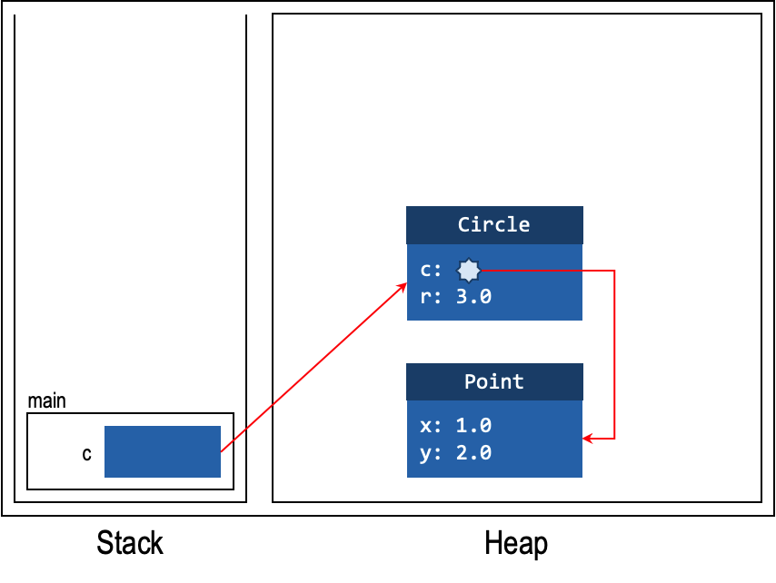
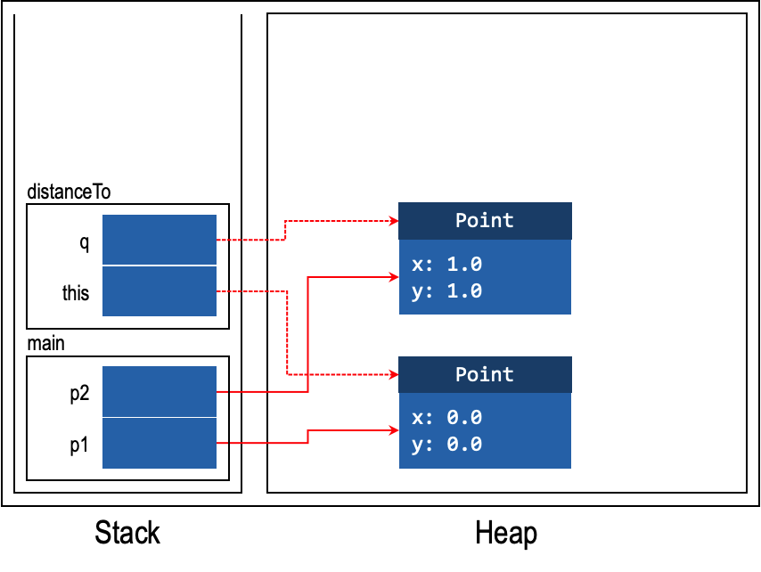

CS2030S Lecture Notes
CS2030S lecture notes.
Java
Java Compiler: compiled into bytecode.(.java-> javac -> .class); interpreted and compiled on the fly by JVM into machine code.(java .class) / be interpreted by the Java interpreter.
Types:
- statically typed language: declare every variable we use in the program and specify its type(compile-time type).
- Primitive: numeric & boolean values byte <: short <: int <: long <: float <: double; char <: int
- Reference Types: stores only the reference to the value
- widening type conversion: long i = int(j); narrowing type conversion: type casting
- Principals:
- encapsulation: keeping all the data and functions operating on the data related to a composite data type together within an abstraction barrier.
- "Tell, Don't Ask" principle. The client should tell a Circle object what to do , instead of asking "What is your radius?" to get the value of a field
- composition: combining classes
- Composition : has-a relationship;Inheritance : is-a relationship.
- polymorphism: method invoked is decided during run-time(dynamic binding/dispatch) - Class Methods do not support dynamic binding. At compile time, determines the method descriptor(including return type) of the method invoked, using the compile-time type of the target. At runtime, the method descriptor is retrieved and the run-tim type is determined
- Inheritance: subtypes can only access public fields/methods
- Liskov Substitution Principle: A subclass should not break the expectations set by the superclass
package:
import java.lang.Math;return Math.PI * this.r * this.r;The main method
1
2public static final void main(String[] args) {
}aliasing: sharing references. Avoid that.e.g.:
1
2
3Point p = ...;
Circle1.setPoint(p);
Circle2.setPoint(p); // Circle1.point is an alias of pStack and Heap
- heap : objects - whenever you use the keyword new
- Stack: variables in method call frames(main/moveTo...)
- non-static methods, including constructors, have
this - Initialization: object- null; Primitive - zero(uninitialized - ∅)


Representing a method:
Object::equals(Object)- a method in the class ObjectMethod override and overload:
@Override: Acts as a hint to the compiler. Usesuperto call the overriden method.method overloading ： differing method signature.
obj instanceof Circle(runtime)final
final class Circle{}To prevent being inhereitedpublic final boolean contains(Point p)To prevent being overriden
abstract: cannot be instantiated - concrete class- Interface:
- across different class hierarchies.(public abstract by default.) An
interface is a type(a type can have multiple supertypes.e.g. a class can
be subype of multiple interface)
1
2
3interface GetAreable {double getArea();}
class Flat extends RealEstate
implements GetAreable,getMonyable {} - casting unrelated interface is allowed. E.g.: class A, Interface B,
class C extends A implements B. There is possiblity that C(subclass of
A) can be casted on B. In this situation
A = Bcompiles. default implementation:default(impure interfaces)
- Wrapper Classes : primitive wrapper class objects are immutable
1
2Integer i = 4;
int j = i;//Autoboxing & unboxing - variance of types:
- covariant : S<:T -> C(S) <: C(T); contravariant;invariant:
neither Arrays of primitive types are invariant
1
2Object[] objArray = intArray;
objArray[0] = "Hello!"; // <- compiles!
- covariant : S<:T -> C(S) <: C(T); contravariant;invariant:
neither Arrays of primitive types are invariant
- Exceptions
instances that are a subtype of the Exception. Follows the hierarchy
1
2
3
4
5
6
7
8
9
10
11
12
13
14
15
16
17class InvalidOperandException extends RuntimeException {
InvalidOperandException(char operator) {
super("ERROR: Invalid operand for operator " + operator);
}
}
public Circle(Point c, double r) throws IllegalArgumentException {
if (r < 0) {
throw new IllegalArgumentException("radius is negative.");
}// throw statement causes the method to immediately return.
try {
scanner = new Scanner(reader);
value = scanner.nextInt();
} catch (FileNotFoundException | InputMismatchException) {
System.err.println("Unable to find" + e.getMessage);
} finally {// executed even when return or throw is called
scanner.close();
}//note the throw and throws differenceChecked: programmer's errors. Would not happen if perfect code was written;
Unchecked:
InvalidInputException, subclass ofRuntimeException1
catch (Exception e) {// do nothing}//Pokemon Exception Handling:
- only reference types can be used as type arguments.
Comparable<T>dictates the implementation of intcompareTo(T t)1
2Class DictEntry<S extends Comparable<S>>
implements Comparable<Pair<S,String>
Note that we use extends for interface bounding
the constructor for a generic class is still declared as Pair (without the type parameters).
Once a generic type is instantiated, it is called a parameterized type
1 | class Seq<T> { |
- Type erasure: after type checking, erase the type parameters and type arguments during compilation(to Object). If the bounded, replaced by the bounds. After type erasure, we do explicit typecast on an object.
arrays are reifiable type(gets full type information during run-time); but generics are not due to type erasure
Actually, generic array declaration is fine but generic array instantiation is not.
1
2
3new Pair<S,T>[2];//illegal
new T[2];//illegal
T[] array;//allowed
ArrayList: a generic class,checks appropriate types during compile time. Note that it is invariant.
@SuppressWarningto the most limited scoperaw types: only used in instance of
Wild Cards:
public void copyTo(Seq<? super T> dest)super is a contravariance typePECS: Producer Extends Consumer Super
Seq<Object> is NOT supertype of all Seq<T> due to generics being invariant.
Seq<?>is a sequence of objects of some specific, but unknown type;Seq<Object>is a sequence of Object instances, with type checking by the compiler;(Note that generics are invariants soSeq<Object> !>: Seq<Integer>)Seqis a sequence of Object instances, without type checking.
- Type Infering: T <: Type2, then T is inferred as Type2
Sample Code for PE
remember to make all the numbers encountered static. (
private static final int RATE = 22)Recommended to do(in subclass and superclass)
1
2
3
4
5
6
7
8
9
10
11
12
13
14
15
16
17
18//Todo:
superclass: {
private String name;
public String toString(){
return this.name;
//recommend this. even if there is no conflicting parameter
}
}
subclass: {
private String typeName;
public String toString() {
return this.typeName + super.toString();
}
}
// rather than use typeToString in subclass and
// toString and (abstract)typeToString in superclassVim
1
2
3
4/ + search for word
{ + line number
:split / :vsplit
Ctrl + w + w/WCoding Style
public protected private abstract default static final transient volatile synchronized native strictfp